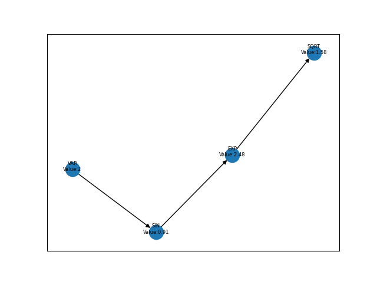

Usage
3. How to use Undefined
This is the recommended usage. The users can interact with the package at their discretion.
Download our wheel file (undefined-1.0.0-py3-none-any.whl) from the Github page. Link <https://github.com/cs107-undefined/cs107-FinalProject/releases/tag/v1.0.0>
And save the file into your working directory.
Then, undefined provided easy installation by running this following command (Assuming your current directory is the working directory, which contains the wheel file):
1pip install undefined-1.0.0-py3-none-any.whl
Users should import the package by the following in their Python script:
1from undefined.API import trace
Also, if the users are planning to use the exponential and trig functions, they should do:
1from undefined.Calculator import sin, cos, tan, exp, log, sqrt
Note: Our package will not work with the functions in other libraries, such as np.sin. Please use our customized functions.
Once imported successfully, users can calculate the derivative of a given function by using the syntax from the section below.
Here, we will demo the R -> R cases in the 3.1 and 3.2 to illustrate the basic usage of Undefined. In 3.3, we will demo the higher order inputs and outputs.
3.1 Forward Model Demo
The trace function will calculate the derivative, which will intake a user defined function using lambda, the mode (default is forward mode), and associated values. The trace function will return the derivatives of the function.
Here, we showed a demo with \(\mathbb{R}\) -> \(\mathbb{R}\):
*Note:*
In our design, the users do not need to instantiate an undefined object. They can just develop the function using Python build-in lambda, and we will not accept other types of input functions.
1# R -> R implementation
2# assuming undefined has been installed.
3
4from undefined.API import trace
5from undefined.Calculator import sin, cos, exp, log, sqrt
6
7# define the user input function using lambda
8f1 = lambda x, y: sqrt(exp(x*y)) + 1
9
10# calculate the derivative when x = 2 and y = 1 for the input function
11output_f1 = trace(f1, x = 2, y = 1)
12
13# print out the forward mode derivative
14print(output_f1)
15
16# output summary results for f1
17>>>value: 3.72
18>>>derivative: [1.359 2.718]
The users can also access the Jacobian results by using the val for the function value and der for the function’s derivative value(s).
1# use val to access the function value
2print(output_f1.val)
3>>>3.72
4
5# use der to access the derivative value of the function
6>>>array([1.359, 2.718])
The trace function can also handle multiple dimensional calculation. Assume we need to calculate \(\mathbb{R}^m\) -> \(\mathbb{R}\), we will input the values for \({x}\) and \({y}\).
1from undefined.API import trace
2from undefined.Calculator import sqrt
3
4# user defined function
5f = lambda x, y: 2*x + sqrt(y)
6
7# call the trace function in undefined, and provide input x = 1 and y = 4
8print(trace(f, x = 2, y = 4))
9
10# the function will return the 1st derivative when x = 1 and y = 4.
11>>> value: 6.0
12>>> derivative: [2. 0.25]
Our function will handle other multiple dimensional calculations, including \(\mathbb{R}\) -> \(\mathbb{R}^n\), \(\mathbb{R}^m\) -> \(\mathbb{R}^n\). The difference will be the number of input values.
3.2 Reverse Model Demo
The trace function will also be able to calculate derivatives in reverse mode by specifying the mode parameters. Take the example below as a demo.
1from undefined.API import trace
2from undefined.Calculator import sqrt, exp, sin
3
4# user defined function
5f = lambda x: sqrt(exp(sin(x)))
6
7# call the trace function in reverse mode, and provide input x = 2
8print(trace(f, mode = "reverse", x = 2))
9
10# the function will return the function value and the derivative when x = 2.
11>>> (1.58, [-0.328])
In the example, we can see that our reverse mode can output the function and the derivative values rounded in 3 decimal places, if applicable. Another feature we developed in our reverse mode is to output the computational graph.
First, let’s look at the tree structure we generated. I will use the same function as example.
1from undefined.API import trace
2from undefined.Calculator import sqrt, exp, sin
3
4# user defined function
5f = lambda x: sqrt(exp(sin(x)))
6
7# call the trace function in reverse mode, and provide input x = 2
8# set plot equals to True so that it will generate the computational graph
9print(trace(f, mode = "reverse", plot = True, x = 2))
10
11# Output: the function will return the function value and the derivative when x = 2.
12Computational Graph (1.58, UDPrimitive.SQRT)
13|
14|<-(parent)-Computational Graph (2.48, UDPrimitive.EXP)
15| |
16| |<-(parent)-Computational Graph (0.91, UDPrimitive.SIN)
17| | |
18| | |<-(parent)-Computational Graph (2, UDPrimitive.VAR)
19(1.58, [-0.328])
Moreover, the reverse mode will auto save the plot to your current working directory. The associated graph generated from the function above is shown below.
{kind=link}
From the graph above, we can see that the graph correctly reflects to computation from the VAR to SIN to EXP and to SQRT.
Undefined, like the name suggested, has unlimited boundary. Let’s try a complicated example:
1from undefined.API import trace
2from undefined.Calculator import sqrt, exp, sin
3
4# user defined function
5f = lambda x, y: exp(1-6*x) * tan(4*x + 2*y) + x**2*y
6
7# call the trace function in reverse mode, and provide input x = 2
8# set plot equals to True so that it will generate the computational graph
9print(trace(f, mode = "reverse", plot = True, x = 1, y = 2))
10
11# Output: the function will return the function value and the derivative when x = 1, y = 2.
12Computational Graph (1.95, UDPrimitive.ADD)
13|
14|<-(parent)-Computational Graph (-0.05, UDPrimitive.MUL)
15| |
16| |<-(parent)-Computational Graph (0.01, UDPrimitive.EXP)
17| | |
18| | |<-(parent)-Computational Graph (-5, UDPrimitive.RSUB)
19| | | |
20| | | |<-(parent)-Computational Graph (6, UDPrimitive.RMUL)
21| | | | |
22| | | | |<-(parent)-Computational Graph (1, UDPrimitive.VAR)
23| |
24| |<-(parent)-Computational Graph (-6.8, UDPrimitive.TAN)
25| | |
26| | |<-(parent)-Computational Graph (8, UDPrimitive.ADD)
27| | | |
28| | | |<-(parent)-Computational Graph (4, UDPrimitive.RMUL)
29| | | | |
30| | | | |<-(parent)-Computational Graph (1, UDPrimitive.VAR)
31| | | |
32| | | |<-(parent)-Computational Graph (4, UDPrimitive.RMUL)
33| | | | |
34| | | | |<-(parent)-Computational Graph (2, UDPrimitive.VAR)
35|
36|<-(parent)-Computational Graph (2, UDPrimitive.MUL)
37| |
38| |<-(parent)-Computational Graph (1, UDPrimitive.POW)
39| | |
40| | |<-(parent)-Computational Graph (1, UDPrimitive.VAR)
41| |
42| |<-(parent)-Computational Graph (2, UDPrimitive.VAR)
43(1.95, [5.548, 1.637])
{kind=link}
From the results above, we can see that that undefined package can handle complicated functions. However, we do have some limitations. We will discuss that in the section below.
Of note: as we used the networkx library to achieve the graph, the graph will be different even if you run the same code twice or many different times.
3.3 Multiple Vectors Inputs and Outputs
Here, I will use the forward mode to demo how to use Undefined using multiple inputs. The reverse mode would result the same.
\(\mathbb{R}^m -> \mathbb{R}\)
This means that we will need to calculate for multiple x input for the same function. We designed our function to use numpy.array to take multiple inputs.
See the example below on how to pass in multiple inputs. Note: you will need to use the double bracket.
1from undefined.API import trace
2from undefined.Calculator import sqrt
3import numpy as np
4
5# user defined function
6f = lambda x: 2*x + sqrt(x)
7
8# call the trace function in undefined, and provide input x = 1 and 2.
9print(trace(f, x = np.array([[1,2]]))
10
11# Output
12(array([[3. , 5.41]]), array([[2.5 , 2.354]]))
In the output above, the first array shows the function values after plugin the x values. The second array is the derivative values. Note: when applying \(\mathbb{R}^m -> \mathbb{R}\), we assume that users will provide equal number of values for all variables in the equation.
\(\mathbb{R} -> \mathbb{R}^n\)
This means that we will need to calculate for a single x input for the multiple functions. In this case, we designed our function to use a list to take multiple functions as inputs. See the example below on how to pass in multiple functions as input.
1from undefined.API import trace
2from undefined.Calculator import sqrt, exp, sin
3
4# user defined functions
5f1 = lambda x: sqrt(exp(sin(x)))
6f2 = lambda x: 2*x + sqrt(x)
7
8# call the trace function in undefined, and provide input functions f1 and f2, and the x value.
9print(trace([f1, f2], x = 2))
10
11# Output
12(array([1.58, 5.41]), array([-0.328, 2.354]))
In the output above, the first array represents the function values and the second array represents the derivative values. I bet you have noticed already that the two functions I used here are the same ones I used in the previous demo. Check out the values with the previous demo and you will see the values are the same.
\(\mathbb{R}^m -> \mathbb{R}^n\)
This means that we will need to calculate for multiple x inputs for the multiple functions. It is the combination of both conditions above. See the example below on how to pass in multiple functions and values as input.
1from undefined.API import trace
2from undefined.Calculator import sqrt, exp, sin
3
4# user defined functions
5f1 = lambda x: sqrt(exp(sin(x)))
6f2 = lambda x: 2*x + sqrt(x)
7
8# call the trace function in undefined, and provide input functions f1 and f2, and the x value.
9print(trace([f1, f2], x = np.array([[2]])))
10
11# Output
12(array([[[1.52, 1.58]], [[3. , 5.41]]]), array([[[ 0.411, -0.328]], [[ 2.5 , 2.354]]]))
In the output above, the first array represents the function values and the second array represents the derivative values. The first 2D list in the first tuple is the function value from the first function, and the first 2D list in the second tuple is the derivative from the first section. The second 2D list corresponding to the second function from the input.
3.4 Debugging
Since the forward model does not store the intermediate values, we recommend the users to use reverse mode for their debugging propose. We offer the tree structure and the computational graph as output to facilitate with the process. Moreover, we also provide the source codes for the users to examine our workflow. Please refer to the Source Code Details section.